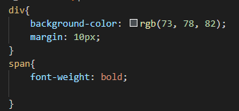
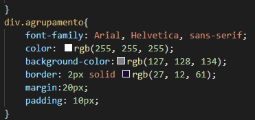
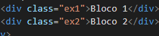
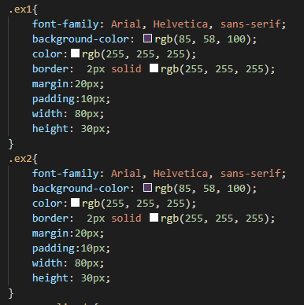
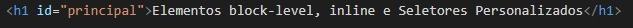
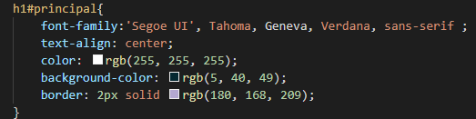
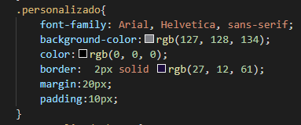

Elementos block-level, inline e Seletores Personalizados
Agrupamento de elementos
Os elementos < div> e < span> são usados para agrupar e estruturar um documento e são frequentemente usados em conjunto com os atributos class e id.
Sintaxe:

Algumas informações:
tag div- dividir em blocos de conteúdo.
margin é o espaçamento entre um bloco e outro.
tag span-font-weight - peso de fonte: enfase no texto.
Elementos Block-level
O elemento < div> é um elemento block-level. Tem a função de agrupar elementos html, definindo blocos de contéudo sempre iniciando uma nova linha e ocupando toda a linha.
Exemplo:
Bloco 1
Bloco 2
Sintaxe:

Elementos Inline
O elemento < span> é um elemento inline. É um elemento neutro embutidos que marcam um bloco dentro de uma mesma linha ou parágrafo. Pode ser usado pelo CSS para estilização de partes específicas do conteúdo do documento HTML
Seletores Personalizados
Possibilita personalizar tags do documento HTML para estilização. Temos os seletores do tipo Classe e o seletor do tipo Id
Seletor do tipo Id - "#"
O seletor de id usa o atributo id de um elemento HTML para selecionar um elemento específico. Cada id é única. O seletor de id é representado por “#”.
Sintaxe:

Algumas informações:
font-family seoge: letra sem serifa;
Seletor do tipo Classe - "."
O seletor de classe seleciona elementos HTML com um atributo de classe específico.O seletor de classe é representado por um ponto, “.”, e tem como alvo elementos com um determinado valor para seu atributo class. Para casos em que haja necessidade de mais de um elemento com a mesma identificação usamos o atributo class.
Sintaxe:

padding: espaçamento entre bloco e texto
Pseudo-Classes - ":"
Usada para definir um estado especial de um elemento. O seletor de classe é representado por dois pontos, “:”. Estão relacionados a um elemento ou uma classe.